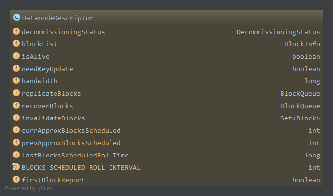
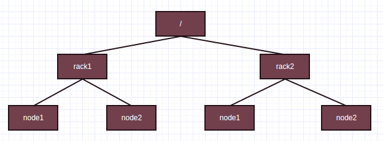
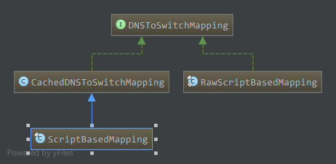

Hadoop版本:Hadoop-1.2.1
参考：《Hadoop技术内幕-深入解析Hadoop Common和HDFS架构设计与实现原理》
1. 元数据管理
NameNode中维护的数据节点相关元数据操作，大部分由FSNamesystem对象负责，主要有一下相关数据结构1
2
3
4
5
6
7
8
9public FSDirectory dir;//目录树相关
final BlocksMap blocksMap = new BlocksMap(DEFAULT_INITIAL_MAP_CAPACITY, DEFAULT_MAP_LOAD_FACTOR);//所有区块信息
public CorruptReplicasMap corruptReplicas = new CorruptReplicasMap();//所有损坏区块信息
NavigableMap<String, DatanodeDescriptor> datanodeMap = new TreeMap<String, DatanodeDescriptor>();//所有数据节点
private Map<String, Collection<Block>> recentInvalidateSets = new TreeMap<String, Collection<Block>>();
Map<String, Collection<Block>> excessReplicateMap = new TreeMap<String, Collection<Block>>();
ArrayList<DatanodeDescriptor> heartbeats = new ArrayList<DatanodeDescriptor>();
private UnderReplicatedBlocks neededReplications = new UnderReplicatedBlocks();
PendingReplicationBlocks pendingReplications;
1.1 FSDirectory
成员dir为FSDirectory类型，负责目录树相关操作，包括命名空间镜像相关操作，由成员FSImage对象fsImage负责。而FSImage中又包含FSEditLog对象，因此又包括编辑日志相关操作。这些操作实现分析另见命名空间镜像和编辑日志和NameNode和SecondaryNameNode交互
1.2 BlockMap
成员blocksMap为BlockMap类型，为NameNode维护的所有的区块信息，区块信息对应为BlockInfo，包含了区块所属文件INode对象，所有副本，副本所在数据节点信息(DatanodeDescriptor)，根据每个备份可以访问所在数据节点上的所有区块。
BlockMap包含如下成员1
2private final int capacity;
private GSet<Block, BlockInfo> blocks;
capacity为管理的区块数量，blocks为GSet集合，具体实现类为LightWeightGSet，不过提供了类似映射的功能，可以根据数据块Block对象获取对应的BlockInfo对象。
1.2.1 BlockInfo
BlockInfo是Block的子类，包含Block所属INode信息和该区块所有副本所属数据节点信息，并能访问副本所在数据节点的其他区块(数据节点区块链表形式)
BlockInfo成员如下1
2
3private INodeFile inode;//所属INodeFile
private LightWeightGSet.LinkedElement nextLinkedElement;
private Object[] triplets;
如上，inode为区块所属的INodeFile信息，triplets数组，该区块的第i个副本所在数据节点为triplets[3i]，为DataNodeDescriptor类型，而triplets[3i+1]为第i个副本所在数据节点该区块的上一个区块，为BlockInfo类型，因为DataNodeDescriptor上所有的区块以双向链表的形式进行管理，triplets[3*i+2]为第i个副本所在数据节点该区块的下一个区块。triplets中保存了DataNodeDescriptor类型，BlockInfo类型，因此为Object对象。
1.2.2 DataNodeDescriptor
再看看DataNodeDescriptor中的成员

分析主要成员
blockList，为BlockInfo类型，作为DataNode上所有区块信息的链表头，BlockInfo可以通过BlockIterator访问数据节点下一个BlockInfo，blockList即为链表头，BlockIterator如下1
2
3
4
5
6
7
8
9
10
11
12
13
14
15
16
17
18
19
20
21
22
23
24static private class BlockIterator implements Iterator<Block> {
private BlockInfo current;//当前区块
private DatanodeDescriptor node;//迭代的数据节点
BlockIterator(BlockInfo head, DatanodeDescriptor dn) {
this.current = head;
this.node = dn;
}
public boolean hasNext() {
return current != null;
}
public BlockInfo next() {
BlockInfo res = current;
//获取DataNodeDescriptor在当前BlockInfo中的索引i，然后通过triplets[3*i+2]获得数据节点上下一个BlockInfo
current = current.getNext(current.findDatanode(node));
return res;
}
public void remove() {
throw new UnsupportedOperationException("Sorry. can't remove.");
}
}如上，next方法中，首先遍历当前区块BlockInfo，找到DataNodeDescriptor在triplets中的索引，通过triplets[3*i+2]获得下一个BlockInfo。
bandwidth，数据节点相关分析中宽带均衡器的带宽，可以更新replicateBlocks，数据节点上需要复制的区块，为BlockQueue类型，成员如下1
private final Queue<BlockTargetPair> blockq = new LinkedList<BlockTargetPair>();
如上，为双向链表，元素类型为
BlockTargetPair，包含区块和对该区块执行相应操作目标数据节点信息，成员如下1
2public final Block block;//区块
public final DatanodeDescriptor[] targets;//区块执行相应操作的目的数据节点因此，replicatedBlocks中，每一个需要复制的区块，有一个对应的BlockTargetPair对象，包含了需要复制到的数据节点信息
recoverBlocks，数据节点上需要恢复的区块，本数据节点为NameNode选取的恢复时主数据节点，同样的为BlockQueue类型，因此参与恢复的数据节点在Block对应的BlockTargetPair中，其中本数据节点字节也在其中。invalidateBlocks，数据节点上应该删除的区块，为Set类型，具体实现为TreeSet有序集。
如上，通过blockList可访问数据节点上所有区块。
NameNode处理相关操作的过程中，发现某些区块副本数没有达到指定值，则会选择源数据节点复制到目标数据节点，以内次会在源数据节点的replicateBlocks中添加该区块信息，包括目标数据节点。在该数据节点的下一次心跳报告时根据replicateBlocks发送DNA_TRANSFER命令，然后数据节点会执行复制过程。
同样的，NameNode在租约恢复时会先将区块恢复到一致状态，因此会选择一个主数据节点，以及其他有副本数参与恢复的数据节点进行恢复。添加需要恢复的区块信息到主数据节点的recoverBlocks中，包含其他参与恢复的数据节点信息。在主数据节点的下一次心跳报告时根据recoverBlocks发送DNA_RECOVERBLOCK命令，然后数据节点会执行区块恢复过程。
对于数据节点上需要删除的区块，NameNode会更新在数据节点的invalidateBlocks中，然后在数据节点的下一次心跳报告时根据invalidateBlocks发送DNA_INVALIDATE命令，数据节点执行相应的删除操作。
还有其他的如宽带更新也是这样，先更新在bandwidth中，然后心跳到来时根据bandwidth进行相应的DNA_BALANCERBANDWIDTHUPDATE命令下达，还有安全相关的访问令牌更新通过DNA_ACCESSKEYUPDATE命令。
1.3 CorruptReplicasMap
成员corruptReplicas为CorruptReplicasMap类型，包含的成员如下1
private Map<Block, Collection<DatanodeDescriptor>> corruptReplicasMap = new TreeMap<Block, Collection<DatanodeDescriptor>>();
键为Block，值为DataNodeDescriptor集合有序映射。为NameNode维护的所有损坏区块和对应所在的数据节点关系。
1.3.1 添加记录
- 数据节点区块报告时和名字节点对应元数据不一致，如大小不一样且对应文件并不处于写状态，添加区块和对应的数据节点
- 数据节点区块读写过程发现区块损坏，或者区块扫描器扫描发现区块损坏(验证校验和)，通过reportBadBlocks进行损坏区块报告，添加区块和对应数据节点(markBlockAsCorrupt中)
1.3.2 移除记录
- 区块在数据节点上被删除时(可能因为多种原因被删除)，移除被删除区块和对应的数据节点记录(removeBlock，removeBlocks中)
- 区块报告发现损坏区块的正常副本数达到了要求，会删除所有的损坏区块副本，同时在corruptReplicas中移除该区块以及所有的数据节点记录(addStoredBlock->invalidateCorruptReplicas中)
- 区块报告时，如果区块在数据节点上已经被删除了(数据节点上没记录，NameNode元数据有记录，需要通过removeStoredBlock移除NameNode中元数据)，在removeStoredBlock中，如果corruptReplicationsMap中有该区块和数据节点记录，则删除该记录(removeStoredBlock中)
1.4 datanodeMap
成员datanodeMap，管理了所有的数据节点，为TreeMap类型。键为数据节点的StorageID，值为NameNode端的数据节点对象DatnodeDescriptor。
其中的元素可能有以下情况:(参考注释)
- 添加，添加一个拥有新存储ID的新的数据节点
- 更新，更新数据节点，还是使用原来的存储ID
- 移除，当且仅当数据节点重启，使用新的存储ID
1.5 recentInvalidateSets
成员recentInvalidateSets为TreeMap类型，键为数据节点的存储ID StorageID，值为Block集合ArrayList。
为NameNod维护的每个数据节点上应该删除的区块。
1.5.1 添加记录
- 处理超过指定副本数的区块时(processOverReplicatedBlock，如重新设置了副本数，接收到一个区块然后副本数超过阈值)，会选择某些数据节点上的副本删除，添加到recentInvalidateSets中(chooseExcessReplicates中)
- 区块损坏处理时，发现对应的INode文件在NameNode中不存在，该损坏区块需要删除(markBlockAsCorrupt中)
- 区块损坏处理时，发现有效副本数已经达到了要求，损坏区块需要删除(markBlockAsCorrupt中)
- 区块报告中发现损坏区块的正常副本数达到了要求，会删除corruptReplicas中该区块所有的损坏区块副本(addStoredBlock->invalidateCorruptReplicas中)
- 区块报告时(周期性报告或BlocksBeingWrittenReport)，报告的区块与NameNode中元数据不匹配(如BlockInfo不存在，INode对象不存在，状态不匹配等)，需要删除该区块(processBlocksBeingWrittenReport，addStoredBlock的rejectAddStoredBlock中)
- 区块报告时，数据节点中已经删除的，需要删除对应的区块元数据(processReport中)
- 删除文件或目录时，删除对应的区块(removeBlocks)
1.5.2 移除记录
- 在ReplicationMonitor线程中添加到相应的DatanodeDescriptor的invalidateBlocks成员中，添加完后在recentInvalidateSets中移除。如果数据节点对应所有应该删除的区块都添加到了DatanodeDescriptor的invalidateBlocks中了，移除该条映射(invalidateWorkForOneNode)
- 移除数据节点时，删除在recentInvalidateSets中的所有区块记录(removeDatanode)
- 处理recentInvalidateSets中的区块记录，即添加到对应DatanodeDescriptor中的invalidateBlocks中，发现DatanodeDescriptor在datanodeMap中不存在了，移除该数据节点在recentInvalidateSets中所有记录(invalidateWorkForOneNode)
1.6 excessReplicateMap
成员excessReplicateMap也是TreeMap，键为数据节点的StorageID，值为该数据节点上超出副本数要求的区块集合。
1.6.1 添加记录
- 当更改(减少)了副本数，或者接收到一个区块导致有效副本数超出期望值，需要通过processOverReplicatedBlock处理超出的副本数，对所有的副本数通过
chooseExcessReplicates选择一些数据节点上的副本添加到excessReplicateMap中(同时会添加到recentInvalidateSets中删除)
1.6.2 移除记录
- 区块报告时，发现数据节点上区块已经被删除，如果该区块在excessReplicateMap中，需要从数据节点对应的映射重移除区块记录，即之前添加到excessReplicateMap，然后进行删除操作已经完成。如果该数据节点上所有超出副本数的区块已经被删除了，则移除该数据节点的映射(removeStoredBlock中)
1.7 heartbeats
成员heartbeats是datanodeMap的子集，注册时添加，数据节点出错应该移除关闭时移除
1.8 neededReplications
成员neededReplications维护了副本数没有达到期望值，需要复制的所有区块，是UnderReplicatedBlocks类，如下1
2
3
4
5
6
7
8
9
10
11class UnderReplicatedBlocks implements Iterable<Block> {
static final int LEVEL = 3;
static public final int QUEUE_WITH_CORRUPT_BLOCKS = 2;
private List<TreeSet<Block>> priorityQueues = new ArrayList<TreeSet<Block>>();
UnderReplicatedBlocks() {
for(int i=0; i<LEVEL; i++) {
priorityQueues.add(new TreeSet<Block>());
}
}
...
成员priorityQueues包含三个优先级队列，如果区块没有达到副本数要求，根据其目前的备份数等信息可得其对应的优先级1
2
3
4
5
6
7
8
9
10
11
12
13
14
15
16
17private int getPriority(Block block, int curReplicas, int decommissionedReplicas, int expectedReplicas) {
//当前副本数小于0，或者满足期望值，不需要复制，优先级为3，而priorityQueues中对应0,1,2，因此不会加入到队列中
if (curReplicas<0 || curReplicas>=expectedReplicas) {
} else if(curReplicas==0) {
//如果当前有效副本数为0，不过在关闭的数据节点上还有副本数，分配最高优先级，即从要关闭的数据节点上复制
if (decommissionedReplicas > 0) {
return 0;
}
return 2;//有效副本数为0，且在关闭的数据节点上没有副本数，最低优先级，保持在队列中
} else if(curReplicas==1) {//只有一个副本，最高优先级
return 0;
} else if(curReplicas*3<expectedReplicas) {//副本数小于期望值的1/3，优先级为1
return 1;
} else {
return 2;
}
}
如上，如果副本数小于0或者已经达到了期望值，不需要复制，优先级为3。如果副本数为0，不过在正在关闭的数据节点上还有副本数，则分配最高优先级，即尽快从正在关闭的数据节点上复制到其他节点。而如果副本数为0同时在正在关闭的数据节点上没有副本数，则优先级最低，保持在队列中。
如果只有一个副本，优先级最高，尽快从剩下的一个副本复制到其他节点。
如果副本数小于1/3，优先级次之为1，否则为2。
neededReplications由ReplicationMonitor线程处理。按照优先级选出待复制Block，然后选择源数据节点和目标数据节点，将区块和目标数据节点信息添加到源数据节点的replicateBlocks中，并在pendingReplications中对应区块正在执行的复制请求中加1。在该源数据节点下次心跳到来时发送DNA_TRANSFER命令，复制到目标数据节点。
1.8.1 添加记录
- 关闭正在写的文件(可能为正常关闭completeFileInternal，可能是NameNode发起的租约恢复后关闭internalReleaseLeaseOne，也可能为DataNode区块恢复后通知NameNode关闭)时，会通过checkReplicationFactor对文件所有区块进行副本数检查，如果副本数没有达到期望值，添加到neededReplications中(checkReplicationFactor中)
- ReplicationMonitor线程将neededReplications中区块信息添加到相应源数据节点的replicateBlocks中后，会相应的在pendingReplications增加区块正在复制操作的次数，如果pendingReplications中记录长时间没有移除(由PendingReplicationMonitor线程检查)，表示复制操作长时间没有完成，重新添加到neededReplications中执行复制(ReplicationMonitor线程processPendingReplications中)
- FSNamesystem成员dnthread DecommissionManager.Monitor会周期性检查目前处于
DECOMMISSION_INPROGRESS状态的数据节点，看其所有的区块副本数是否满足期望值，如果所有区块达到了期望值则更新状态为DECOMMISSIONED，即该数据节点不会参与复制操作，可以关闭。在检查过程中，如果某个区块没达到期望值，且在neededReplications中不存在，且当前没有正在执行的复制操作，则添加到neededReplications中(isReplicationInProgress中)
1.8.2 更新优先级
当区块当前有效副本数或者期望副本数改变时，优先级改变，需要从一个优先级队列移到另一个优先级队列，更新通过update方法完成，如果先后优先级不一样，从原来优先级移除(之前不存在队列中当然不会移除)，然后新的优先级在[0,2]范围内添加到对应队列，有如下情况
- 期望副本数改变(setReplicationInternal中)
- 区块损坏(可能数据节点发现报告或者NameNode接收区块报告时发现和元数据不一致)时，或者种种原因删除一个区块副本元数据时，有效副本数降低(markBlockAsCorrupt中)
- 区块报告中，接收了一个新的区块，该区块有效副本数增加(addStoredBlock)
1.8.3 移除记录
- 在ReplicationMonitor线程中，对每一个选择到的待复制Block，在选择完源数据节点或目的数据节点后，如果发现其对应的INode对象在blocksMap中不存在了或者说对应的INode是INodeFileUnderConstruction，即还未关闭不能执行复制操作，这时需要从neededReplications移除。注意的是，选择完源数据节点会进行一次判断，选择完目标数据节点后也会进行一次判断(computeReplicationWorkForBlock中)
- 在ReplicationMonitor线程中，选择待复制的Block后，在选择完源数据节点或目标数据节点后，如果发现当前有效副本数加上正在复制的副本数达到了期望值，则不需要复制了，从neededReplications中移除，同样的会进行两次判断。(computeReplicationWorkForBlock中)
- 在ReplicationMonitor线程中，选择待复制Block，正常选择好源数据节点或目标数据节点，将区块和要复制到的目标数据节点信息添加到源数据节点的replicateBlocks中后，会在下次心跳发送复制命令。因此复制相关信息添加到源数据节点后，基本相应的增加了正在复制的操作为目标数据节点个数，如果原来有效副本数(实际副本数加上pendingReplications中正在复制记录)加上新增的要执行复制操作的个数如果达到了期望值，则从neededReplications中移除(computeReplicationWorkForBlock中)
- 接收到新的区块(区块报告或者数据节点的BlockReceived通知)时，会相应的增加该区块的副本数，如果达到了期望值则从neededReplications中移除(addStoredBlock中)
1.9 pendingReplications
如上1.8所述，pendingReplications维护了正在执行复制的区块信息，为PendingReplicationBlocks类，主要成员如下1
2
3
4
5
6private Map<Block, PendingBlockInfo> pendingReplications;
private ArrayList<Block> timedOutItems;
Daemon timerThread = null;
private volatile boolean fsRunning = true;
private long timeout = 5 * 60 * 1000;//5min
private long defaultRecheckInterval = 5 * 60 * 1000;
pendingReplications为HashMap，键为Block，值为Block正在复制的相关信息，为PendingBlockInfo类，如下1
2private long timeStamp;
private int numReplicasInProgress;
timeStamp为创建时间，numReplicasInProgress为该区块正在执行复制的份数，如前所述当ReplicationMonitor线程将neededReplications中Block选择源数据节点目标数据节点后，复制相关信息记录到源数据节点的replicateBlocks中，然后在pendingReplications中将numReplicasInProgress增加目标数据节点个数，即当期正在复制的份数增加。
成员timedOutItems为复制超时的区块，即指定时间内还没从pendingReplications中移除，指定时间内复制没有完成，超时区块会重新添加到neededReplications中重新执行复制操作。超时的判断由PendingReplicationMonitor线程完成，线程为成员timerThread。线程默认5min检查一次，且复制操作超时时间为5min。
构造如下1
2
3
4
5
6
7
8
9
10
11
12
13PendingReplicationBlocks(long timeoutPeriod) {
if ( timeoutPeriod > 0 ) {
this.timeout = timeoutPeriod;
}
init();
}
void init() {
pendingReplications = new HashMap<Block, PendingBlockInfo>();
timedOutItems = new ArrayList<Block>();
this.timerThread = new Daemon(new PendingReplicationMonitor());
timerThread.start();
}
PendingReplicationMonitor线程如下1
2
3
4
5
6
7
8
9
10
11public void run() {
while (fsRunning) {
long period = Math.min(defaultRecheckInterval, timeout);
try {
pendingReplicationCheck();
Thread.sleep(period);//缺省5min检查一次
} catch (InterruptedException ie) {
FSNamesystem.LOG.debug("PendingReplicationMonitor thread received exception. " + ie);
}
}
}
由pendingReplicationCheck执行检查1
2
3
4
5
6
7
8
9
10
11
12
13
14
15
16
17
18
19
20void pendingReplicationCheck() {
synchronized (pendingReplications) {
Iterator iter = pendingReplications.entrySet().iterator();
long now = FSNamesystem.now();
FSNamesystem.LOG.debug("PendingReplicationMonitor checking Q");
while (iter.hasNext()) {
Map.Entry entry = (Map.Entry) iter.next();
PendingBlockInfo pendingBlock = (PendingBlockInfo) entry.getValue();
//当前时间超过了该Block记录的超时阈值(从创建开始的5min)，超时，添加到timedOutItems中
if (now > pendingBlock.getTimeStamp() + timeout) {
Block block = (Block) entry.getKey();
synchronized (timedOutItems) {
timedOutItems.add(block);//添加到timedOutItems中
}
FSNamesystem.LOG.warn( "PendingReplicationMonitor timed out block " + block);
iter.remove();//移除超时Block记录
}
}
}
}
如上，默认情况下，创建开始后，如果5min内该Block的复制操作还没完成(完成后会从pendingReplications中移除)，则会添加到timedOutItems中，而timedOutItems中的Block会在ReplicationMonitor线程中由processPendingReplications重新添加到neededReplications中。
2. DecommissionManager.Monitor线程
前面分析中提到，FSnamesystem成员dnthread DecommissionManager.Monitor线程会周期性检查处于DECOMMISSION_INPROGRESS状态的数据节点，数据节点处于DECOMMISSION_INPROGRESS状态后要确保所有区块副本数达到期望值才能最终关闭，也因此在DataNode的关闭过程可能需要长时间等待。
dnthread成员初始化如下1
2
3
4this.dnthread = new Daemon(new DecommissionManager(this).new Monitor(
conf.getInt("dfs.namenode.decommission.interval", 30),
conf.getInt("dfs.namenode.decommission.nodes.per.interval", 5)));
dnthread.start();
DecommissionManager中维护了所属的FSNamesystem对象，看Monitor线程1
2
3
4Monitor(int recheckIntervalInSecond, int numNodesPerCheck) {
this.recheckInterval = recheckIntervalInSecond * 1000L;
this.numNodesPerCheck = numNodesPerCheck;
}
如上，recheckInterval为检查周期，由配置项dfs.namenode.decommission.interval确定，默认30s检查一次。
numNodesPerCheck为每个周期检查DataNode的个数，由配置项dfs.namenode.decommission.nodes.per.interval确定，默认一次检查5个DataNode。
另外，还有一个成员firstkey，缺省为空，为从datanodeMap开始检查的数据节点StorageID。
线程如下1
2
3
4
5
6
7
8
9
10
11
12public void run() {
for(; fsnamesystem.isRunning(); ) {
synchronized(fsnamesystem) {
check();
}
try {
Thread.sleep(recheckInterval);
} catch (InterruptedException ie) {
LOG.info("Interrupted " + this.getClass().getSimpleName(), ie);
}
}
}
由check方法执行检查1
2
3
4
5
6
7
8
9
10
11
12
13
14
15
16
17
18
19
20
21private void check() {
int count = 0;
//遍历datanodeMap中每一个DatanodeDescriptor对象
for(Map.Entry<String, DatanodeDescriptor> entry
: new CyclicIteration<String, DatanodeDescriptor>(fsnamesystem.datanodeMap, firstkey)) {
final DatanodeDescriptor d = entry.getValue();
firstkey = entry.getKey();
if (d.isDecommissionInProgress()) {//如果处于DECOMMISSION_INPROGRESS，检查是否所有的区块副本数满足要求
try {
//检查是否所有区块副本数满足要求，如果是则更新DataNode状态为DECOMMISSIONED
fsnamesystem.checkDecommissionStateInternal(d);
} catch(Exception e) {
LOG.warn("entry=" + entry, e);
}
if (++count == numNodesPerCheck) {
return;
}
}
}
}
如上，遍历datanodeMap中从firstKey开始的所有DatanodeDescriptor，对于处于DECOMMISSION_INPROGRESS状态的DataNode，如果所有区块副本数达到了期望值，则更新状态为DECOMMISSIONED，否则没有达到副本期望值的区块，如果不在neededReplications中则添加，等待复制，已经在neededReplications中的当然不需要继续添加了。
判断并添加相应区块到neededReplications中由isReplicationInProgress完成1
2
3
4
5
6
7
8
9
10
11
12
13
14
15
16
17
18
19
20
21
22private boolean isReplicationInProgress(DatanodeDescriptor srcNode) {
...
for(final Iterator<Block> i = srcNode.getBlockIterator(); i.hasNext(); ) {
final Block block = i.next();
INode fileINode = blocksMap.getINode(block);
if (fileINode != null) {
NumberReplicas num = countNodes(block);
int curReplicas = num.liveReplicas();
int curExpectedReplicas = getReplication(block);
if (curExpectedReplicas > curReplicas) {//副本数没有达到期望值
...
//没有正在执行的复制操作，且neededReplications中不存在该Block，添加到neededReplications
if (!neededReplications.contains(block) &&
pendingReplications.getNumReplicas(block) == 0) {
neededReplications.add(block, curReplicas, num.decommissionedReplicas(), curExpectedReplicas);
}
}
}
}
srcNode.decommissioningStatus.set(underReplicatedBlocks, decommissionOnlyReplicas, underReplicatedInOpenFiles);
return status;
}
3. ReplicationMonitor线程
FSNamesystem成员replthread对应的线程，负责recentInvalidateSets和neededReplications相关操作，即区块删除和复制，初始化如下1
2
3this.replmon = new ReplicationMonitor();
this.replthread = new Daemon(replmon);
replthread.start();
线程如下1
2
3
4
5
6
7
8
9
10
11
12
13
14
15
16
17
18
19public void run() {
while (fsRunning) {
try {
computeDatanodeWork();
processPendingReplications();
Thread.sleep(replicationRecheckInterval);
} catch (InterruptedException ie) {
LOG.warn("ReplicationMonitor thread received InterruptedException" + ie);
break;
} catch (IOException ie) {
LOG.warn("ReplicationMonitor thread received exception. " + ie + " " +
StringUtils.stringifyException(ie));
} catch (Throwable t) {
LOG.warn("ReplicationMonitor thread received Runtime exception. " + t + " " +
StringUtils.stringifyException(t));
Runtime.getRuntime().exit(-1);
}
}
}
每过replicationRecheckInterval进行一次操作，replicationRecheckInterval为FSNamesystem成员，默认3s1
this.replicationRecheckInterval = conf.getInt("dfs.replication.interval", 3) * 1000L;
主要的工作由computeDatanodeWork完成，processPendingReplications将pendingReplications线程PendingReplicationMonitor检测到复制超时的区块重新添加到neededReplications中。1
2
3
4
5
6
7
8
9
10
11
12
13
14
15
16
17
18
19
20
21public int computeDatanodeWork() throws IOException {
...
synchronized(heartbeats) {
//一次处理复制的区块数
blocksToProcess = (int)(heartbeats.size() * this.blocksReplWorkMultiplier);
//一次处理删除的节点数，节点上所有该删除的都会处理
nodesToProcess = (int)Math.ceil((double)heartbeats.size() * this.blocksInvalidateWorkPct);
}
replmon.replicateQueueStats.startCycle(blocksToProcess);
replicationWorkFound = computeReplicationWork(blocksToProcess);
replmon.replicateQueueStats.endCycle(replicationWorkFound);
...//更新FSNamesystemMetrics计数器
replmon.invalidateQueueStats.startCycle(nodesToProcess);
invalidationWorkFound = computeInvalidateWork(nodesToProcess);
replmon.invalidateQueueStats.endCycle(invalidationWorkFound);
return replicationWorkFound + invalidationWorkFound;
}
如上，blocksProcess为一次可以处理复制的区块数，每个数据节点处理个数由配置项dfs.namenode.replication.work.multiplier.per.iteration，默认一次一个数据节点处理两个
nodesToProcess为一次可以处理删除操作的节点数，由配置项dfs.namenode.invalidate.work.pct.per.iteration决定，默认0.32，即每次处理32%的数据节点的删除操作。
复制操作由computeReplicationWork负责，删除操作由computeInvalidateWork完成
3.1 computeReplicationWork复制操作
1 | private int computeReplicationWork(int blocksToProcess) throws IOException { |
如上，首先通过chooseUnderReplicatedBlocks从neededReplications中按照优先级选择最多blocksToProcess个待复制的区块，然后对每一个区块通过computeReplicationWorkForBlock进行处理。
如果给定Block是成功添加到选取的源数据节点待复制区块队列中，则能够在下一次心跳到来时发送复制命令，执行复制，此时computeReplicationWorkForBlock返回true。而如果发现因为种种原因不能执行复制，返回false。因此computeReplicationWork返回值就是有效的添加执行复制操作的区块数。
3.1.1 chooseUnderReplicatedBlocks选择待复制区块
1 | synchronized List<List<Block>> chooseUnderReplicatedBlocks(int blocksToProcess) { |
如上，因为neededReplications有三个优先级队列，因此结果列表也分配了三个优先级队列。
通过neededReplications创建的迭代器，会根据优先级获取下一个Block(从neededReplications.get(0)开始)，然后定位到上次结束的下一个位置，由replIndex标识，就可以开始获取待复制的Block了。
如果到达neededReplications的尾部，则从头开始获取Block，重新创建迭代器。由前面neededReplications的相关分析可知，neededReplications中的Block在副本数达到期望值时(判断时机见前面)，或者区块对应元数据不存在时会从neededReplications中移除，因此存在neededReplications的Block就是需要进行复制的，例如某个区块有效副本数为1，在优先级最高的队列中，进行了一次复制操作后，副本数没有达到3，还是存在neededReplications中，只不过因为执行了复制操作，不是在最高优先级的队列中了。因此达到尾部了可以从头循环读取Block进行复制操作。
3.1.2 computeReplicationWorkForBlock对每个待复制区块进行处理
computeReplicationWorkForBlock中首先选取源数据节点，做相应的检查1
2
3
4
5
6
7
8
9
10
11
12
13
14
15
16
17
18
19
20
21
22
23
24
25
26
27
28
29
30synchronized (this) {
synchronized (neededReplications) {
fileINode = blocksMap.getINode(block);
//Block对应的文件不存在，或者文件正在写，不能复制，从neededReplications中移除，返回false
if(fileINode == null || fileINode.isUnderConstruction()) {
neededReplications.remove(block, priority); // remove from neededReplications
replIndex--;
return false;
}
requiredReplication = fileINode.getReplication();
containingNodes = new ArrayList<DatanodeDescriptor>();
NumberReplicas numReplicas = new NumberReplicas();
srcNode = chooseSourceDatanode(block, containingNodes, numReplicas);//获取源数据节点
if ((numReplicas.liveReplicas() + numReplicas.decommissionedReplicas()) <= 0) {
missingBlocksInCurIter++;
}
if(srcNode == null) //没有源数据节点可以用来复制，返回false
return false;
//有效副本数加正在复制的副本数已经满足了副本期望值，不需要复制，从neededReplications中移除，返回false
numEffectiveReplicas = numReplicas.liveReplicas() + pendingReplications.getNumReplicas(block);
if(numEffectiveReplicas >= requiredReplication) {
neededReplications.remove(block, priority); // remove from neededReplications
replIndex--;
NameNode.stateChangeLog.info("BLOCK* Removing " + block + " from neededReplications as it has enough replicas");
return false;
}
}
}
如上，首先检查对应的文件是否存在，如果不存在或者文件正在写，则不能执行复制，从neededReplications中移除记录并返回false。
然后通过chooseSourceDatanode选择源数据节点，并统计副本信息NumberReplicas，如果没有可以复制的源数据节点，则不能复制返回false。或者说当前有效副本数加上正在复制的副本数已经达到了期望值，不需要复制，从neededReplications中移除并返回false。
3.1.2.1 选择源数据节点
chooseSourceDatanode如下1
2
3
4
5
6
7
8
9
10
11
12
13
14
15
16
17
18
19
20
21
22
23
24
25
26
27
28
29
30
31
32
33
34
35
36
37
38
39
40
41
42
43
44
45private DatanodeDescriptor chooseSourceDatanode(Block block,
List<DatanodeDescriptor> containingNodes, NumberReplicas numReplicas) {
containingNodes.clear();
DatanodeDescriptor srcNode = null;
int live = 0;
int decommissioned = 0;
int corrupt = 0;
int excess = 0;
Iterator<DatanodeDescriptor> it = blocksMap.nodeIterator(block);//Block的数据节点迭代器
Collection<DatanodeDescriptor> nodesCorrupt = corruptReplicas.getNodes(block);//Block对应的损坏信息
while(it.hasNext()) {
DatanodeDescriptor node = it.next();
Collection<Block> excessBlocks = excessReplicateMap.get(node.getStorageID());//超过期望副本数信息
if ((nodesCorrupt != null) && (nodesCorrupt.contains(node)))
corrupt++;//区块损坏的数据节点计数
else if (node.isDecommissionInProgress() || node.isDecommissioned())
decommissioned++;//区块所属正在退役或已经退役的数据节点计数
else if (excessBlocks != null && excessBlocks.contains(block)) {
excess++;//所在数据节点上区块超过期望副本数计数，应该删除，不是有效的副本
} else {
live++;//有效副本
}
containingNodes.add(node);
if ((nodesCorrupt != null) && nodesCorrupt.contains(node))//区块损坏，数据节点不能作为源数据节点
continue;
if(node.getNumberOfBlocksToBeReplicated() >= maxReplicationStreams)//数据节点正在复制的区块达到阈值，不能作为源数据节点
continue; // already reached replication limit
if(excessBlocks != null && excessBlocks.contains(block))//数据节点上区块副本属于超过期望值的，需要删除，不能作为源数据节点
continue;
if(node.isDecommissioned())//数据节点已经退役，不能作为源数据节点
continue;
if(node.isDecommissionInProgress() || srcNode == null) {//优先选择正在退役状态的数据节点
srcNode = node;
continue;
}
if(srcNode.isDecommissionInProgress())
continue;
//没有选择到正在退役状态的数据节点，随机选择一个可用数据节点
if(r.nextBoolean())
srcNode = node;
}
if(numReplicas != null)
numReplicas.initialize(live, decommissioned, corrupt, excess);//更新副本状态
return srcNode;
}
如上，containingNodes是该区块副本所有所在的数据节点，不管是否有效。
选择时，不选择已经处于DECOMMISSIONED即退役的数据节点，不选择所在区块已经损坏的数据节点，不选择正在执行的复制操作达到阈值的数据节点，不选择所在区块为超过副本期望值应该删除的数据节点。优先选择处于DECOMMISSION_INPROGRESS状态的数据节点，因为没有写数据流量(不会有其他节点往该数据节点写数据)，相对其他数据节点更闲一点。如果没有选择到DECOMMISSION_INPROGRESS的数据节点，则从剩余可用数据节点中随机选择一个。
3.1.2.2 选择目标数据节点
1 | DatanodeDescriptor targets[] = replicator.chooseTarget(fileINode, |
如上，如果目标数据节点没有，则不能复制返回false。
目标数据节点的选择由BlockPlacementPolicy对象replicator的chooseTarget方法完成
传入参数fileINode为对应文件，requiredReplication-numEffectiveReplicas为需要复制的份数也就是要选择的目标数据节点个数。srcNode为前面选择的源数据节点，containingNodes为前面选择出来的包含区块的所有数据节点。
最终会调用BlockPlacementPolicy的同名方法，为抽象方法，实现在BlockPlacementPolicyDefault类中，如下1
2
3
4
5
6
7
8
9
10
11
12
13
14
15
16
17
18
19
20
21
22
23
24
25
26
27DatanodeDescriptor[] chooseTarget(int numOfReplicas, DatanodeDescriptor writer,
List<DatanodeDescriptor> chosenNodes, HashMap<Node, Node> excludedNodes, long blocksize) {
...//初始化，要选择节点数调整等
//根据副本总数和机架数计算每个机架上最大可选择节点数
int maxNodesPerRack = (totalNumOfReplicas-1)/clusterMap.getNumOfRacks()+2;
//选择结果初始化为chosenNodes
List<DatanodeDescriptor> results = new ArrayList<DatanodeDescriptor>(chosenNodes);
for (DatanodeDescriptor node:chosenNodes) {//选择前已经存在区块副本的数据节点添加到excludedNodes中，不重复选择
// add localMachine and related nodes to excludedNodes
addToExcludedNodes(node, excludedNodes);
adjustExcludedNodes(excludedNodes, node);
}
if (!clusterMap.contains(writer)) {
writer=null;
}
boolean avoidStaleNodes = (stats != null && stats.shouldAvoidStaleDataNodesForWrite());//是否选择过时的节点
//选择目标节点
DatanodeDescriptor localNode = chooseTarget(numOfReplicas, writer,
excludedNodes, blocksize, maxNodesPerRack, results, avoidStaleNodes);
results.removeAll(chosenNodes);//从结果中移除选择操作之前的节点
//排序结果，形成管道
return getPipeline((writer==null)?localNode:writer, results.toArray(new DatanodeDescriptor[results.size()]));
}
如上，给定源数据节点和目前已经存在区块的数据节点，最多选择numOfReplicas个数据节点，我们这里传入的excludedNodes为null。做了相应的处理后，通过同名方法chooseTarget选择目标节点，需要注意的是根据总的副本数和集群中机架数需要计算一个机架上最大可以选择的节点数maxNodesPerRack。
注意的是，选择目标数据节点前已经存在区块副本的数据节点chosenNodes会添加到excludedNodes中不会重复选择这些数据节点。同时chosenNodes会作为results的初始值，根据这些初始值做出选择，在选择完后从results中删除
3.1.2.3 目标数据节点选择原则
在新的chooseTarget方法中，选择节点时有一下规则:
第一个节点，尽量和源数据节点选在同一个机架上
1
2
3
4
5
6if (numOfResults == 0) {
writer = chooseLocalNode(writer, excludedNodes, blocksize, maxNodesPerRack, results, avoidStaleNodes);
if (--numOfReplicas == 0) {
return writer;
}
}如上，选择和源数据节点writer同一个机架上节点，不过要满足不能是excludedNodes中节点(excludedNodes中包括chosenNodes)，一个机架上选择的节点数不能超出maxNodesPerRack。选择同一机架上的一个数据节点由chooseLocalNode完成，具体代码不再分析。
第二个节点，必须选择和第一个数据节点不同机架上的另一个节点
1
2
3
4
5
6
7if (numOfResults <= 1) {//小于等于1，等于0的情况前面已经处理，这里处理等于1的情况，即选择第二个节点
//与第一个数据节点(results.get(0))所在机架不同机架上选择一个数据节点，满足excludedNodes和maxNodesPerRack等条件
chooseRemoteRack(1, results.get(0), excludedNodes, blocksize, maxNodesPerRack, results, avoidStaleNodes);
if (--numOfReplicas == 0) {
return writer;
}
}如上，处理results中已经有一个数据节点，选择第二个数据节点的情况。通过chooseRemoteRack选择一个与第一个数据节点机架不同机架上的数据节点，满足excludedNodes和maxNodesPerRack等条件。
- 第三个节点，如果
- 前两个节点在同一机架上，则选择和前两个节点所在机架不同机架上的一个数据节点
- 前两个节点不在同一机架上，如果
- 之前没有存在区块副本的数据节点，选择前results.size()==0，即results中所有节点都是这次选择结果，不包含原来存在的数据节点，则选择和第二个节点同一机架上的一个节点。
因为选择区块复制的目标数据节点时，该区块目前存在的副本数所在数据节点会在选择时添加到results中，根据现存区块副本的数据节点来选择新的数据节点，以防止选择的数据节点与现存数据节点一样而导致原来本来有问题的数据节点又被选择，或者原来数据节点选择复制后存在多个副本等情况。在选择完后，原来的数据节点会从results中移除。 - 之前有存在区块副本的数据节点，选择前results.size()!=0，即前面chosenNodes初始化results，results有初始值，则选择和源数据节点统一机架上的一个节点
代码如下1
2
3
4
5
6
7
8
9
10
11
12
13
14
15
16int numOfResults = results.size();
boolean newBlock = (numOfResults==0);
...
if (numOfResults <= 2) {//小于等于2，0,1前面分析了，因此这里处理等于2即选择第三个数据节点的情况
if (clusterMap.isOnSameRack(results.get(0), results.get(1))) {//第一个和第二个节点在一个机架上
//选择一个和前面两个节点不同机架的节点，满足excludedNodes和maxNodesPerRack
chooseRemoteRack(1, results.get(0), excludedNodes, blocksize, maxNodesPerRack, results, avoidStaleNodes);
} else if (newBlock){//前两个节点机架不同，且results没有初始节点，选择和第二个数据节点(results.get(1))同一机架上的一个数据节点
chooseLocalRack(results.get(1), excludedNodes, blocksize, maxNodesPerRack, results, avoidStaleNodes);
} else {//前两个节点机架不同，且results中有初始节点，选择和源数据节点(writer)同一机架的一个数据节点
chooseLocalRack(writer, excludedNodes, blocksize, maxNodesPerRack, results, avoidStaleNodes);
}
if (--numOfReplicas == 0) {
return writer;
}
}
- 之前没有存在区块副本的数据节点，选择前results.size()==0，即results中所有节点都是这次选择结果，不包含原来存在的数据节点，则选择和第二个节点同一机架上的一个节点。
超过3个节点的其他节点，从集群中随机选择
1
chooseRandom(numOfReplicas, NodeBase.ROOT, excludedNodes, blocksize, maxNodesPerRack, results, avoidStaleNodes)
如果要选择的副本数超过3个，则剩下的从集群中随机选择，当然要满足excludedNodes和maxNodesPerRack等条件。注意这里选择的是剩下的numOfReplicas个数据节点，前面的都是一次处理一种情况，选择一个节点，选择到一个节点后numOfReplicas减一，因此这里的numOfReplicas为剩下的要选择的数据节点。
3.1.2.4 选择的目标数据节点形成管道(网络拓扑)
如前，通过chooseTarget选择完数据节点后，因为在选择前将之前存在副本的数据节点添加到results作为初始值，选择后要移除。移除后的results为最新选择的数据节点，通过getPipeline方法排序选择结果，形成管道返回，前面方法最后部分如下1
2
3results.removeAll(chosenNodes);//从结果中移除选择操作之前的节点
//排序结果，形成管道
return getPipeline((writer==null)?localNode:writer, results.toArray(new DatanodeDescriptor[results.size()]));
getPipeline同样为BlockPlacementPolicyDefault中的方法，会将选择结果results根据在集群中节点之间的距离进行排序，第一个节点与源数据节点最近，第二个节点为剩下的与第一个节点最近，第三个为剩下的与第二个距离最近，以此类推。
两个节点间的距离由BlockPlacementPolicyDefault中成员clusterMap的getDistance方法计算，clusterMap为NetworkTopology类。
NetworkTopology即网络拓扑，Hadoop中把数据节点形成的网络拓扑看成一棵树，如/datacenter1/rack1/node1，/datacenter1/rack1/node2，分别为数据中心中某一机架上的两个数据节点。
网络拓扑中节点表示为接口org.apache.hadoop.net.Node的实现，DatanodeDescriptor实现了该接口，主要方法如下1
2
3
4
5
6
7public String getNetworkLocation();//获取网络位置，如/rack1/node1
public void setNetworkLocation(String location);//设置网络位置
public String getName();//节点名字
public Node getParent();//节点的父节点
public void setParent(Node parent);//设置父节点
public int getLevel();//节点在树中的层级，根节点的层级为0，根节点子节点层级为1
public void setLevel(int i);//设置在树中层级
计算两个节点的距离直观的即为树中两个节点的距离，例如下图
/rack1/node1到/rack1/node2之间距离为2，rack1/node1到rack2/node1之间距离为4
前面第三个节点选择时，isOnSameRack判断是否为一个机架也是根据网络拓扑来的，两个节点的父节点如果相同，则在一个机架上。
那么节点的网络位置是怎么来的呢？由DNSToSwitchMapping接口提供DNS名字或者IP地址到网络拓扑中的网络位置转换，该接口被HDFS和MapReduce等组件使用1
2
3public interface DNSToSwitchMapping {
public List<String> resolve(List<String> names);
}
如上，只有一个方法resolve，将保存节点名字或IP地址的参数names转换成对应的网络位置。
配置项topology.node.switch.mapping.impl用于指定它的一个实现，目前其实现有

ScriptBasedMapping类，可以通过运行一个Shell脚本，完成转换。
没有配置的情况下，DatanodeDescriptor缺省网络位置为/default-rack。
有了节点间的距离计算，对results的排序就比较好处理了，首先查找与源数据节点writer最近的一个节点排在results的第一个节点位置，然后查找与当前第一个节点距离最近的数据节点排在第二个节点位置，以此类推，代码不再贴出。这样，建立数据流管道时，每个节点到直接下游节点的网络距离是最短的，减少网络损耗。
3.1.2.5 添加到源数据节点的待复制队列
到这里目标节点选择完成，回到computeReplicationWorkForBlock中，接下来进行相关检查，将区块和目标数据节点等信息添加到源数据节点的replicateBlocks中，更新pendingReplications1
2
3
4
5
6
7
8
9
10
11
12
13
14
15
16
17
18
19
20
21
22
23synchronized (this) {
synchronized (neededReplications) {
...//如前重新检查区块元信息，如果区块对应文件不存在或者正在写则不能复制，从neededReplications中移除记录，并返回false
...//如前重新检查副本数是否满足了期望值，如果满足了则不需要进行复制，从neededReplications中移除记录，返回false
//添加区块到源数据节点的待复制列表replicateBlocks中，通知指定目标数据节点
srcNode.addBlockToBeReplicated(block, targets);
for (DatanodeDescriptor dn : targets) {
dn.incBlocksScheduled();
}
//更新区块在pendingReplications中的记录，原来没记录则新增该区块正在复制副本数为targets长度，原来有记录则增加正在复制的副本数
pendingReplications.increment(block, targets.length);
NameNode.stateChangeLog.debug("BLOCK* " + block + " is moved from neededReplications to pendingReplications");
//如果本次添加到源数据节点后，使得正在复制的副本数加上有效副本数达到了期望值，则从neededReplications中移除记录
if(numEffectiveReplicas + targets.length >= requiredReplication) {
neededReplications.remove(block, priority); // remove from neededReplications
replIndex--;
}
}
}
如上，首先重新检查相关元数据，这里需要重新检查是因为在选择目标数据节点前释放了相关锁，选择目标过程中不使用全局锁，因为在选择目标数据节点过程中持有锁代价太高，如下为代码中不使用锁的注释1
2
3// choose replication targets: NOT HOLDING THE GLOBAL LOCK
// It is costly to extract the filename for which chooseTargets is called,
// so for now we pass in the Inode itself.
因此重新获取锁后要进行检查。相关检查后，添加区块到源数据节点的待复制区块队列replicateBlocks中，复制的目标数据节点为targets，如前面对replicateBlocks的介绍，根据Block和targets创建BlockTargetPair对象，添加到队列中。
然后更新pendingReplications，因为新增了正在复制的副本数。如果本次新增后正在复制的副本数和之前有效副本数(集群中存储的)达到了期望值，则从neededReplications中移除。
这样复制操作完成，可以返回true了。等待源数据节点下一次心跳到来，FSNamesystem在处理心跳时发现源数据节点有待复制的区块，发送相应的区块复制命令，执行复制。
3.2 computeInvalidateWork删除操作
1 | int computeInvalidateWork(int nodesToProcess) { |
如上，传入参数nodesToProcess为一次处理的节点个数，默认为所有数据节点的32%，根据recentInvalidateSets中可以处理的数据节点进行调节。
然后随机选择nodesToProcess个nodesToProcess个数据节点，对每一个数据节点通过invalidateWorkForOneNode进行处理
3.2.1 invalidateWorkForOneNode
1 | private int invalidateWorkForOneNode(String nodeId) { |
如上，每个数据节点每次能个处理的待删除区块最多为blockInvalidateLimit，为FSNamesystem的成员，默认100。
进行相关检查后，从recentInvalidateSets中数据节点的待删除区块集合中添加最多blockInvalidateLimit个区块记录，并且从recentInvalidateSets中移除添加的记录。
添加完后，相应的区块记录从recentInvalidateSets中移除了，如果此时该数据节点没有待删除区块，都被处理完了，则同时移除该数据节点在recentInvalidateSets中的记录。
最终将blocksToInvalidate中添加的区块集合添加到数据节点的待删除列表invalidateBlocks中。如前面分析，invalidateBlocks为该数据节点上待删除区块，在下次心跳到来时，如果发现invalidateBlocks中有区块，则会向该数据节点发送区块删除命令，执行删除。
到这里，ReplicationMonitor的复制和删除操作都分析完了，删除操作相对复制操作简单，因为不需要选择源数据节点和目标数据节点。
FSNamesystem中还有其他服务线程，限于篇幅，本文不再分析，具体分析见后文。